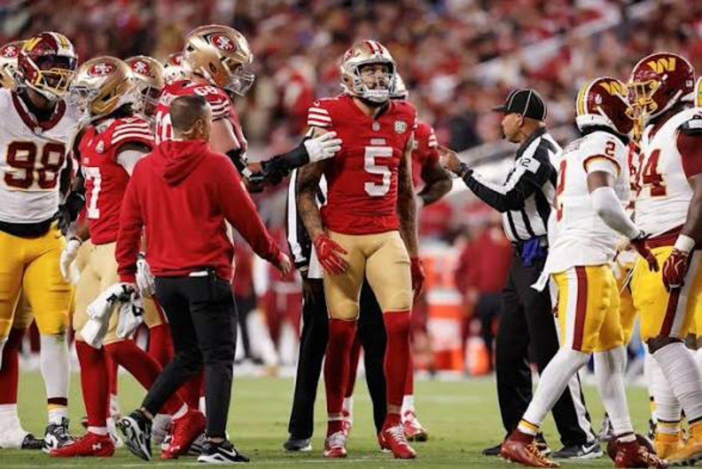
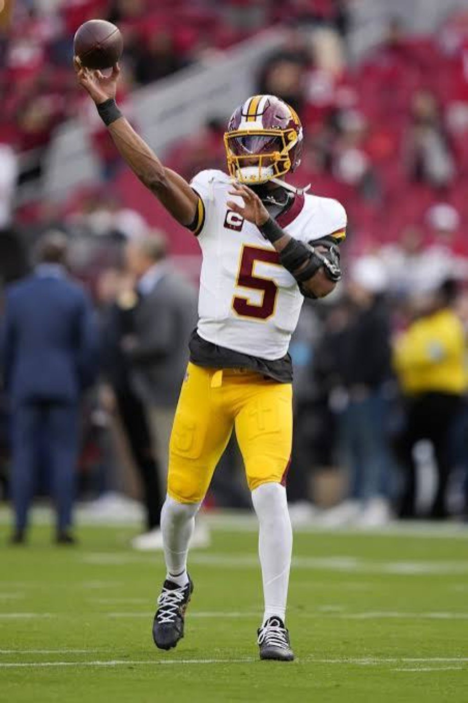
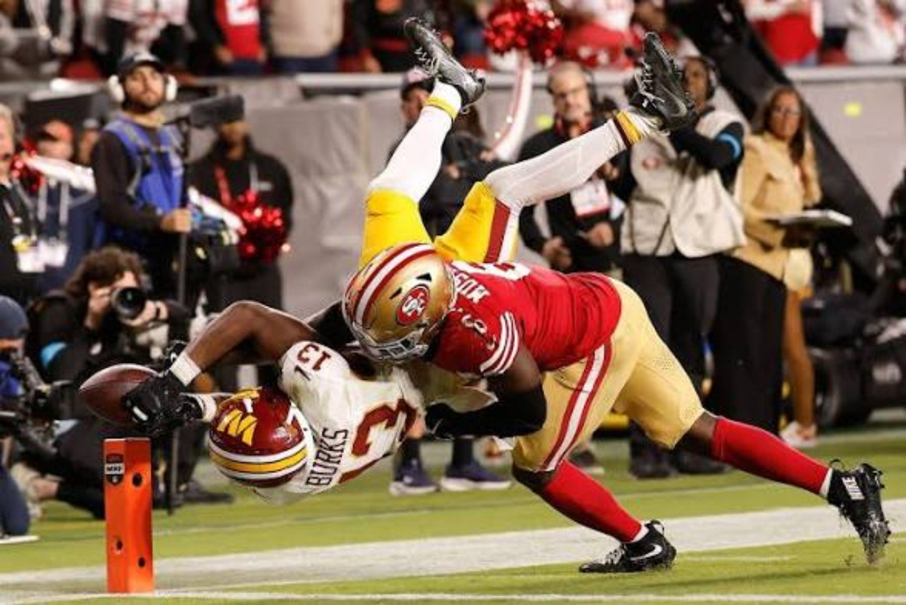
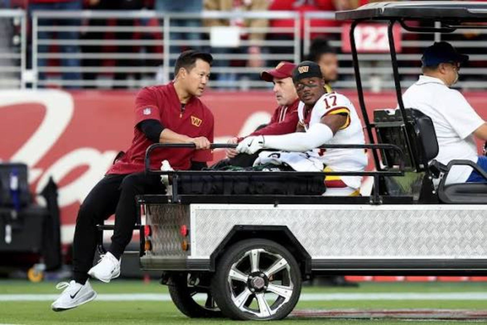

6–0, But Not Without a Warning.
San Francisco survives Washington's second-half push. Jayden Daniels delivers a statement in defeat. Mike Evans' Achilles concern casts a shadow over the 49ers' perfect start.

For thirty minutes, San Francisco looked like the most complete team in football. For the next thirty, the undefeated 49ers got a reminder that a fast start and a deep roster do not automatically close out an opponent. Washington pushed the game to the final possessions, and the 49ers needed Malik Mustapha and their defense to protect a six-point lead.
That tension is the story of this game. The 49ers leave Week 6 at 6–0, but the manner of this win—and the injury to Mike Evans—raises questions that matter beyond one Monday night. Meanwhile, the Commanders leave with another loss, but Jayden Daniels gave them one of their most encouraging stretches of quarterback play this season.
The first half: San Francisco in full command
The 49ers built a 20–3 halftime lead and piled up 303 yards before the break while limiting Washington to 90. Brock Purdy looked decisive, Shanahan's play sequencing kept Washington off balance, and Christian McCaffrey's threat as both a runner and receiver forced the defense to account for every inch of the field.
Mike Evans was the difference-maker outside. His three catches for 94 yards showed why San Francisco wanted his size, catch radius and vertical presence. A receiver who can win downfield changes how opponents defend Kittle, McCaffrey and the intermediate passing game. The early offense wasn't just moving the chains; it was stretching Washington horizontally and vertically.
Defensively, the 49ers were organized and disruptive. Fred Warner's command of the middle helped San Francisco stay disciplined against Daniels, and Washington struggled to sustain possessions. At halftime, this looked less like a contest than a demonstration of the 49ers' ceiling.

Second-half reversal: Daniels refuses to fold
Then the rhythm flipped. Washington attacked with more urgency and leaned into quicker throws and manageable reads for Daniels. He finished 29-of-40 for 300 passing yards and two touchdowns without an interception, after a first half in which he completed only seven passes. Against a 5–0 defense, on the road, without a healthy Terry McLaurin for much of the game, that response deserves serious recognition.
We're not going to confuse a close loss with a win. Washington still failed to finish its comeback, and the early offensive stagnation helped create the hole in the first place. But the second half showed Daniels' poise, accuracy and willingness to keep attacking. For a team searching for momentum, his performance is a building block. There's a legitimate argument that, considering the circumstances, this was among his most encouraging outings.
San Francisco, meanwhile, managed just 72 yards after halftime. Credit Washington for adjusting, but the 49ers must ask why their offense became so much easier to contain. The disappearance of explosive outside production made the field feel smaller, and Washington's pressure and coverage adjustments began to dictate the terms.

Christian McCaffrey: the engine still runs
McCaffrey finished with 64 rushing yards, 53 receiving yards and two touchdowns. His 117 yards from scrimmage were essential to San Francisco's early control. He remains the kind of player who can rescue a play design, punish an unfavorable matchup and turn a short gain into a drive-sustaining one.
His lost fumble also mattered. In a game where the offense struggled to reestablish itself after halftime, wasted possessions made Washington's comeback more dangerous. We can appreciate McCaffrey's impact and still acknowledge the mistake. More important, if Evans misses time, San Francisco cannot simply make McCaffrey the answer to every missing piece. Preserving his workload for December and January has to remain part of the championship plan.
Mike Evans' Achilles: the injury that changes the conversation
Evans left after aggravating an Achilles issue, following a first half in which he was San Francisco's most dangerous outside receiver. At publication time, the full severity and any long-term timetable still required confirmation. We should not call it a tear without a medical diagnosis.
Even a shorter absence could have consequences. Evans gives Purdy a trusted contested-catch option, makes safeties respect the deep ball and opens the underneath windows where McCaffrey and Kittle do so much damage. Without that threat, defenses can squeeze the field. The 49ers' second-half drop-off isn't proof that Evans' departure caused every problem, but it makes the depth question impossible to ignore.
4DK injury watch: Confirm Evans' diagnosis and practice status before Week 7. If he's facing a prolonged absence, San Francisco must evaluate its available receivers, its passing-game adjustments and whether a trade-deadline addition is warranted. No recovery timetable should be assumed.

Fred Warner, Malik Mustapha and the plays that saved the night
Warner's value is bigger than a stat line. His pre-snap recognition, communication and ability to hold the defense together are central to San Francisco's identity. The 49ers' first-half discipline reflected that leadership. But the defense also has to own the second-half openings that allowed Daniels to find a rhythm.
And then came Malik Mustapha. With Washington threatening to steal the game, the safety helped produce a crucial third-down stop and broke up a fourth-down attempt intended for Treylon Burks near the goal line. The defense later shut the door on Washington's last possession. Those aren't cosmetic plays. Those are the moments that separate a good performance from a win.
Mustapha's closing sequence deserves its own spotlight because it captures what championship teams need: even when the offense stalls and momentum changes sides, somebody has to make a decisive play.

Washington's McLaurin problem—and its bigger direction
Terry McLaurin's injury robbed Daniels of a trusted receiving weapon early, complicating an already difficult matchup. Washington must verify the injury's severity rather than rush to conclusions. The bye week offers time to reassess his availability and the offensive structure around Daniels.
At 1–4–1, Washington can't survive on moral victories. It needs cleaner starts, better protection, more reliable run-game support and a defense that doesn't surrender control of the first half. Still, Daniels' response gives the organization a reason to believe that its most important piece is moving in the right direction.

Week 7 outlook: two different kinds of pressure
San Francisco (6–0): at Atlanta, Sunday, October 25. The Falcons and Bijan Robinson will test the 49ers' tackling, run fits and discipline. San Francisco's bigger concern is offensive continuity if Evans is unavailable. A seventh win would be impressive; maintaining enough healthy weapons to compete deep into the season is the larger mission.
Washington (1–4–1): Week 7 bye; Philadelphia next on November 1. The Commanders need to use the break to evaluate McLaurin, reinforce what worked for Daniels in the second half and confront the defensive breakdowns that created the 20–3 deficit. The season is getting away from them, but their quarterback's resilience is something real to build around.
4DK verdict: the record is perfect, the performance wasn't
Six-and-oh means something. It reflects preparation, talent, coaching and the ability to win games that don't unfold cleanly. The 49ers earned this victory. But if we're judging them by championship standards, Monday was both proof of their ceiling and a warning about how vulnerable that ceiling becomes when injuries strike and the offense loses its rhythm.
Washington lost, but Daniels deserves his flowers for the fight he showed. San Francisco won, but it must be honest about what happened after halftime. McCaffrey remains the engine, Warner remains the organizer, and Mustapha made the kind of play that preserves an undefeated season.
Our final word: 6–0 is a statement. Staying healthy and learning how to finish are the next tests.